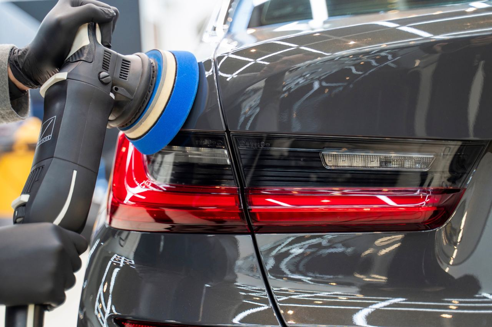

    <!-- Postituse sisu -->
    <div class="container mt-5">
        <div class="row">
            <div class="col-lg-8 mx-auto">
                <h1 class="mb-3">Auto poleerimine – kas see on seda väärt?</h1>
                <p class="text-muted">Avaldatud: 28. märts 2025</p>
                
                

                <p>Pärast uute velgede paigaldamist hakkas mulle silma, et auto värv ei näe enam nii värske välja. 
                Päikese käes oli näha väikseid kriime ja tuhmust – seega otsustasin, et aeg on auto **poleerida**! 🚗✨</p>

                <h3>Miks poleerida?</h3>
                <p>Auto poleerimine eemaldab väiksemad kriimud ja annab värvile sügavuse. Samuti muudab see auto **paremini hooldatuks** ning 
                hilisem pesemine on lihtsam.</p>

                <h3>Kuidas protsess käis?</h3>
                <ul>
                    <li>🧼 **Auto pesemine ja kuivatamine** – enne poleerimist peab pind olema täiesti puhas.</li>
                    <li>🔍 **Kriimude ülevaatus** – otsustasin, kas teha käsitsi või masinaga.</li>
                    <li>🛠 **Poleerimispasta ja mikrokiudlapp** – kasutasin spetsiaalset poleerimisvahendit.</li>
                    <li>💪 **Masinpoleerimine** – läks kiiremini ja tulemus oli ühtlasem.</li>
                    <li>🔒 **Lakkimine või vahaga kaitsmine** – et sära kestaks kauem.</li>
                </ul>

                <h3>Kas tulemus oli hea?</h3>
                <p>Jah! ✨ Auto näeb välja **peaaegu nagu uus** ja kriimud on praktiliselt kadunud. 
                Lisaks on pind **sile ja libe**, mis tähendab, et mustus ei haaku nii kergesti.</p>

                <h3>Mida järgmisena?</h3>
                <p>Kui juba hoolduseks läks, siis võiks järgmise sammuna teha **keraamilise kaitsekatte**, et see sära püsiks veel kauem! 🤔</p>

                <hr>
                <!-- Kategooriad/Märksõnad -->
                <p><strong>Kategooriad:</strong> <span class="badge bg-primary">Autod</span> <span class="badge bg-secondary">BMW</span> <span class="badge bg-success">Tuuning</span> <span class="badge bg-warning">Veljed</span></p>

                <!-- Eelmine ja järgmine postitus -->
                <div class="d-flex justify-content-between mt-4">
                    <a href="index_.php?page=post3" class="btn btn-outline-secondary">⬅ Eelmine postitus</a>
                    <a href="index_.php?page=post5" class="btn btn-primary">Järgmine postitus ➡</a>
                </div>
            </div>
        </div>
    </div>

